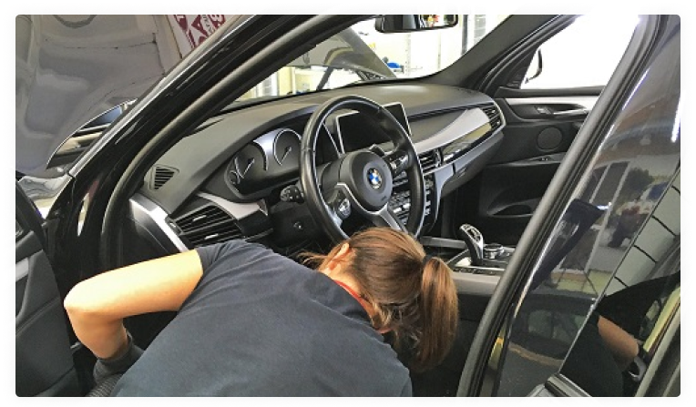

Инструкция по технической проверке авто перед покупкой
Шаг 1.Визуальный осмотр внешнего вида автомобиля
Прихватите на осмотр авто обычный магнит. Он должен прилипать ко всем частям машины. Если где-то контакт теряется, есть дополнительный слой краски.
Если магнита нет, но есть хорошее зрение, сядьте на корточки и присмотритесь к боковой части машины: равномерно ли отражение? Кажется, что есть изломы? Авто перекрашен.
цените в целом внешний вид машины: состояние фар, стекол, зеркал, стыки деталей. Не должно быть крупных сколов, запотеваний, ржавчины.
Отдельный элемент проверки внешнего вида авто – состояние покрышек. Оцените износ резины, глубину протектора, степень стертости кромок, узнайте год выпуска покрышек. Убедитесь в том, что нет микротрещин, порезов, следов ремонта.
Шаг 2. Осмотр салона авто
По состоянию салона можно понять, как долго пользовались машиной, а также все ли в порядке с техжидкостями, нет ли течей. На сиденье вам должно быть комфортно, под ковриком сухо.
Важный этап проверки салона – наличие подушек безопасности. Если вы видите, что обшивку кресел или лобовое стекло меняли, цвет заглушек не совпадает с палитрой отделки салона – большая вероятность того, что машина попадала в серьезное ДТП, при котором сработали подушки.После осмотра салона приступайте к проверке «внутрянки» машины. Для начала откройте капот.
Шаг 3. Проверка подкапотных элементов
Проверка ДВС
Осмотрите мотор. Если видите подтеки, посторонние жидкости, деформацию корпуса или отсутствие пластиковой крышки (на тех авто, в которых она должна быть), авто мог попасть в ДТП, а также частично или полностью выйти из строя. Если двигатель, наоборот, чистый, откажитесь от покупки. С мотором есть неполадки, которые продавец пытается скрыть.
Сердцем автомобиля является двигатель. В процессе работы он может выйти из строя, что в результате напрямую скажется на возможности езды на машине. При проверке необходимо проверить:
- работу холостого хода;
- уровень масла;
- наличие характерных шумов;
- уровень гидравлической и охлаждающей жидкости;
- состояние ремней привода;
- работу дроссельной заслонки;
- герметичность двигателя;
- целостность шлангов;
- прочность крепления хомутов.
Проверка АКБ
Осмотрите батарею. Грязь на контактах будет мешать работе контактов, окисленные выводы (клеммы с налетом) – работе аккумулятора в целом. Не должно быть трещин, вмятин на корпусе – может вытечь электролит. Эффективно проверять аккумулятор, когда машина долго стояла на улице в холодное время года. Если завелась легко, АКБ исправен, если «с натяжкой», его нужно менять или искать причину потери напряжения.
Оценка КПП
Перед тем, как самостоятельно проверить масло в МКПП или АКПП, убедитесь, что в интересующей вас машине есть специальный щуп под капотом. Повод для беспокойства – цвет. Если масло стало коричневым или черным, это говорит о том, что его пора менять или детали КПП сильно изношены.
Оценка системы зажигания
Особенно важно это сделать, если, стоя рядом с заведенной машиной, вы слышите неровную работу цилиндров, хлопки в трубе или видите, что мотор перегревается, расход растет, а из впускного коллектора валит черный дым.